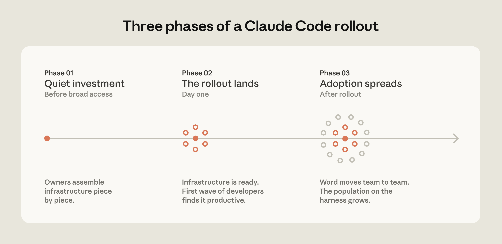

<!--
  scene-pattern3-fig2.html — Scene 10 / Pattern 3 (fig2) (66.627s).
  Hero: assets/blog/fig2-rollout-phases.png. Anecdote callout-pills + agent-manager marker.
-->
<template id="scene-pattern3-fig2-template">
  <div data-composition-id="scene-pattern3-fig2"
       data-start="0"
       data-width="1920"
       data-height="1080"
       style="position:absolute; inset:0; overflow:hidden;
              font-family:var(--sans); color:var(--text);">

    <style>
      #scene-fig2-content {
        width: 100%; height: 100%;
        padding: var(--pad-top) var(--pad-x) var(--pad-bottom);
        display: flex; flex-direction: column;
        align-items: center; justify-content: center;
        gap: 16px;
        box-sizing: border-box;
      }
      #fig2-overline {
        font-family: var(--mono);
        font-weight: 700;
        font-size: 24px;
        letter-spacing: 7px;
        text-transform: uppercase;
        color: var(--accent-2);
      }
      #fig2-header-row {
        display: flex; align-items: baseline; gap: 22px;
      }
      #fig2-header-num {
        font-family: var(--sans);
        font-weight: 900;
        font-size: 92px;
        line-height: 0.85;
        letter-spacing: -3px;
        color: var(--accent-2);
        text-shadow: 0 0 60px rgba(167, 139, 250, 0.45);
      }
      #fig2-header-title {
        font-family: var(--sans);
        font-weight: 800;
        font-size: 44px;
        line-height: 1.05;
        letter-spacing: -1px;
        color: var(--text);
      }
      #fig2-row {
        display: flex; flex-direction: row;
        align-items: center; gap: 28px;
        width: 100%;
      }
      #fig2-stage {
        perspective: 2000px;
        transform-style: preserve-3d;
        position: relative;
      }
      #fig2-stage img {
        display: block;
        width: 1080px;
        max-height: 580px;
        border-radius: 18px;
        border: 2px solid rgba(167, 139, 250, 0.45);
        box-shadow: 0 24px 60px rgba(0, 0, 0, 0.55),
                    0 0 80px rgba(167, 139, 250, 0.20);
        object-fit: contain;
        background: #161B26;
      }
      #fig2-side {
        display: flex; flex-direction: column;
        gap: 12px;
        min-width: 380px;
      }
      .fig2-pill {
        padding: 14px 18px;
        border-radius: 14px;
        background: var(--bg-card);
        border: 1.5px solid rgba(167, 139, 250, 0.40);
        font-family: var(--mono);
        font-weight: 700;
        font-size: 28px;
        letter-spacing: 0.5px;
        color: var(--text);
        line-height: 1.3;
      }
      .fig2-pill .ptag {
        display: block;
        font-weight: 700;
        font-size: 24px;
        letter-spacing: 2px;
        color: var(--accent-2);
        margin-bottom: 4px;
        text-transform: uppercase;
      }
      #fig2-agent-mgr {
        font-family: var(--sans);
        font-weight: 800;
        font-size: 36px;
        letter-spacing: -0.5px;
        color: var(--text);
        position: relative;
        display: inline-block;
        margin-top: 4px;
      }
      #fig2-agent-mgr .accent { color: var(--accent-2); }
      #fig2-mark-agent {
        position: absolute;
        left: 0;
        bottom: -6px;
        height: 4px;
        width: 0;
        background: var(--accent-2);
        border-radius: 2px;
        box-shadow: 0 0 14px rgba(167, 139, 250, 0.6);
      }
      .fig2-chip {
        align-self: flex-start;
        padding: 10px 16px;
        border-radius: 999px;
        background: rgba(167, 139, 250, 0.16);
        border: 1.5px solid rgba(167, 139, 250, 0.50);
        font-family: var(--mono);
        font-weight: 700;
        font-size: 24px;
        letter-spacing: 1.5px;
        color: var(--accent-2);
        text-transform: uppercase;
      }
      #fig2-cross-row {
        font-family: var(--mono);
        font-weight: 700;
        font-size: 24px;
        letter-spacing: 1px;
        color: var(--text);
        position: relative;
        display: inline-block;
      }
      #fig2-mark-cross {
        display: block;
        height: 4px;
        width: 0;
        background: var(--accent-2);
        border-radius: 2px;
        margin-top: 3px;
        box-shadow: 0 0 12px rgba(167, 139, 250, 0.5);
      }
    </style>

    <div id="scene-fig2-content">
      <div id="fig2-overline">FROM THE ARTICLE &middot; FIGURE 2</div>
      <div id="fig2-header-row">
        <div id="fig2-header-num">3</div>
        <div id="fig2-header-title">Pattern 3 &middot; Assign ownership.</div>
      </div>
      <div id="fig2-row">
        <div id="fig2-stage">
          
        </div>
        <div id="fig2-side">
          <div class="fig2-pill" id="fig2-pill-day1">
            <span class="ptag">Anecdote A</span>
            Plugins + MCP suite available on <strong>day one</strong>.
          </div>
          <div class="fig2-pill" id="fig2-pill-team">
            <span class="ptag">Anecdote B</span>
            Dedicated AI-tooling team in place before rollout.
          </div>
          <div id="fig2-agent-mgr">
            The <span class="accent">agent manager</span>.
            <span id="fig2-mark-agent"></span>
          </div>
          <div class="fig2-chip" id="fig2-chip-dri">Min viable: DRI</div>
          <div id="fig2-cross-row">
            Engineering &middot; Info-sec &middot; Governance
            <span id="fig2-mark-cross"></span>
          </div>
        </div>
      </div>
    </div>

    <script src="https://cdn.jsdelivr.net/npm/gsap@3.14.2/dist/gsap.min.js"></script>
    <script>
      window.__timelines = window.__timelines || {};
      const SCENE_DURATION = 66.627;
      const YOYO_CYCLE = 12;
      const yoyoRepeats = Math.max(0, Math.floor(SCENE_DURATION / YOYO_CYCLE) - 1);

      const tl = gsap.timeline({
        paused: true,
        defaults: { ease: "power3.out", duration: 0.6 }
      });

      tl.set("#fig2-overline",      { y: 18, opacity: 0 }, 0);
      tl.set("#fig2-header-num",    { scale: 0.7, opacity: 0 }, 0);
      tl.set("#fig2-header-title",  { x: -20, opacity: 0 }, 0);
      tl.set("#fig2-pill-day1",     { x: 30, opacity: 0 }, 0);
      tl.set("#fig2-pill-team",     { x: 30, opacity: 0 }, 0);
      tl.set("#fig2-agent-mgr",     { y: 16, opacity: 0 }, 0);
      tl.set("#fig2-chip-dri",      { y: 16, opacity: 0 }, 0);
      tl.set("#fig2-cross-row",     { y: 16, opacity: 0 }, 0);

      // scene_start = 384.941 — times below are scene-relative
      // All anchors derived from transcript.json word.start - 384.941
      tl.to("#fig2-overline", { y: 0, opacity: 1, duration: 0.4, ease: "power2.out" }, 0.0);

      // 3D entrance from t=0 — figure visible from first frame (abs 384.941)
      tl.fromTo("#fig2-stage",
        { scale: 0.7, rotationY: -25, opacity: 0, transformPerspective: 2000 },
        { scale: 1.0, rotationY: 0,   opacity: 1, duration: 1.2, ease: "back.out(1.4)", immediateRender: false },
        0.0);

      // Micro-yoyo
      tl.to("#fig2-stage", {
        rotationY: 1.5,
        duration: YOYO_CYCLE / 2,
        ease: "sine.inOut",
        yoyo: true,
        repeat: Math.min(yoyoRepeats, 4),
        immediateRender: false
      }, 1.8);

      // Pattern-3 header lockup
      // "Pattern" abs=389.979 → scene 5.038; "Assign" abs=390.989 → scene 6.048
      // OLD: 12.059 / 12.359 — was ~7s late vs narration
      tl.to("#fig2-header-num",   { scale: 1, opacity: 1, duration: 0.55, ease: "back.out(1.5)" }, 5.038);
      tl.to("#fig2-header-title", { x: 0, opacity: 1, duration: 0.55, ease: "power3.out" }, 5.338);

      // Anecdote pill 1 — word "day" abs=410.737 → scene 25.796 (unchanged, already correct)
      tl.to("#fig2-pill-day1", { x: 0, opacity: 1, duration: 0.55, ease: "back.out(1.4)" }, 25.796);
      // Anecdote pill 2 — word "an" abs=412.873 → scene 27.932 (was 27.929, drift 0.003s — tightened)
      tl.to("#fig2-pill-team", { x: 0, opacity: 1, duration: 0.55, ease: "back.out(1.4)" }, 27.932);

      // Agent manager — word "agent" abs=422.115 → scene 37.174 (unchanged, already correct)
      tl.to("#fig2-agent-mgr", { y: 0, opacity: 1, duration: 0.55, ease: "power3.out" }, 37.174);
      // Marker on "agent manager"
      tl.to("#fig2-mark-agent", { width: 260, duration: 0.75, ease: "power2.out" }, 37.174);

      // DRI chip — word "D" abs=430.996 → scene 46.055 (was 47.059, drift 1.004s — fixed)
      tl.to("#fig2-chip-dri", { y: 0, opacity: 1, duration: 0.5, ease: "back.out(1.4)" }, 46.055);
      // Breath beat — "And" (smoothest deployments) abs=438.194 → scene 53.253 (was 53.059, drift 0.194s — tightened)
      tl.to("#fig2-agent-mgr", { scale: 1.04, duration: 0.3, ease: "sine.inOut", yoyo: true, repeat: 1 }, 53.253);

      // Cross-functional row — "Engineering," abs=442.966 → scene 58.025 (was 58.029, drift 0.004s — tightened)
      tl.to("#fig2-cross-row", { y: 0, opacity: 1, duration: 0.55, ease: "power3.out" }, 58.025);
      tl.to("#fig2-mark-cross", { width: 460, duration: 2.0, ease: "power2.out" }, 58.025);

      // Tail glow-pulse
      tl.to("#fig2-stage", { boxShadow: "0 24px 60px rgba(0,0,0,0.55), 0 0 100px rgba(167,139,250,0.35)", duration: 0.5, yoyo: true, repeat: 1 }, 64.0);

      tl.set({}, {}, SCENE_DURATION);
      window.__timelines["scene-pattern3-fig2"] = tl;
    </script>
  </div>
</template>
